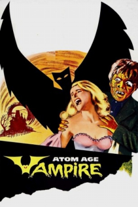

Also known as:Seddok, l'erede di Satana (original title)
Country:United States, 107 minutes
Spoken languages:Italian
Genres:Horror
Director(s):Anton Giulio Majano
Writer(s):
Video Codec:Unknown
Number: 47


Certification:NR
Storyline:
When a singer (Susanne Loret) is horribly disfigured in a car accident, a scientist (Alberto Lupo) develops a treatment which can restore her beauty by injecting her with a special serum. While performing the procedure, however, he falls in love with her. As the treatment begins to fail, he determines to save her appearance, regardless of how many women he must kill for her sake.
Cast:

Medium: Original DVD,
Comments: Part of: 100 Greatest Horror Classics
Loaned: No
Aspect ratio: Unknown